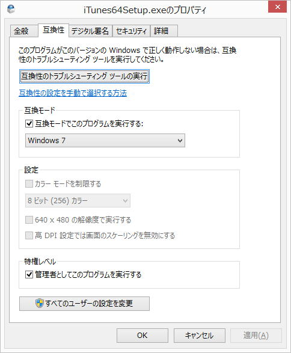
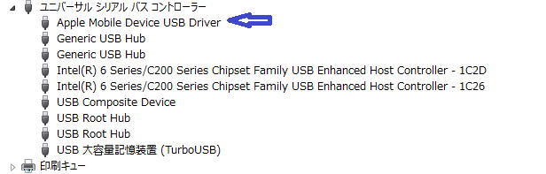
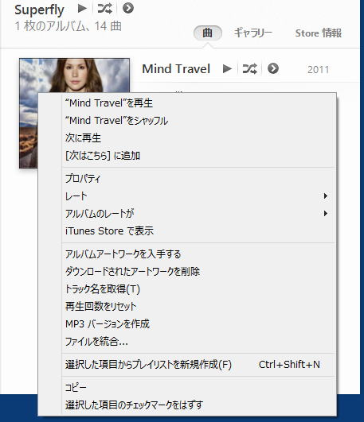
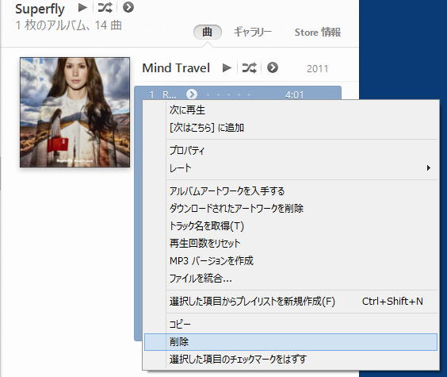
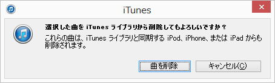

| TOP | weblog | TIPS | Works | リンク | 戻る |
| iPhone5 TIPS(2) (12)標準アプリのカレンダーに日本の祝祭日を組み入れる (13)iTunesからiPhone5見れない。（認識しない） (14)iTunesではアルバムは普通に削除できない (15)DropBoxに写真をアップロードする（Androidと共通記事です） (12) iPhone5の標準アプリの「カレンダー」には祝祭日が入っていません。 電話帳のグループ機能に引き続き、ガラケーからダウングレードです。 祝祭日を追加するにはAppleの米国サイトから「Japanese Holiday Calendar」をダウンロード＆インストールすると祝祭日が入ります。 なぜにこの様な基本中の基本の標準アプリが米国のサイトにしか置いていないの？ -戻る- (13) Windows8Pro 64bit版でのお話です。 調べれば直接的な原因はすぐわかります、「Apple Mobile Device USB Driver」がインストールされていないから。 このドライバは単体でインストーラーはAppleから提供されていません。 iTunesのインストールの一環で行われます。 なぜインストールされないかは不明です。(Windowsでは当たり前に起きる現象） 回避策なのかどうかはわかりませんが、、インストーラーの互換性設定で「Windows７」、「管理者としてこのプログラムを実行する」をオンにするとドライバがインストールされる「ときがたまにある」です。 どっちが有効なのか、再現性がどうなのか、そんなことはわざわざ調べません。   -戻る- (14) Windowsの基本操作としてオブジェクトを右クリックすると大抵「削除」がありますが、iTunesはとうはなりません。 iTunesからアルバムを削除したいときは、収録曲を全部削除します。 そうするとアルバムが削除されます。 下図はアルバムを右クリックした様子、「削除」はありません。  収録曲全部を選択して「削除」するとアルバムも削除されます。   |